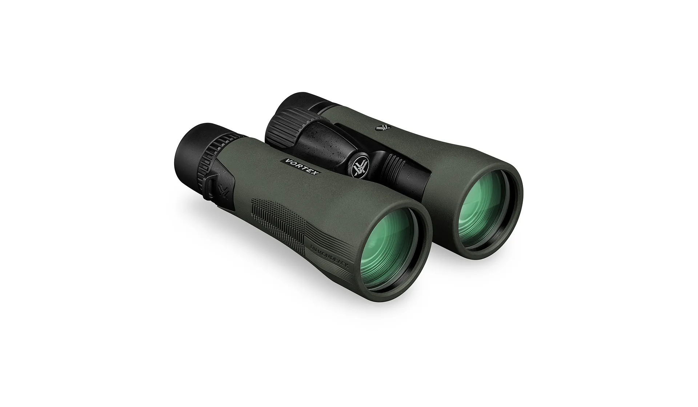
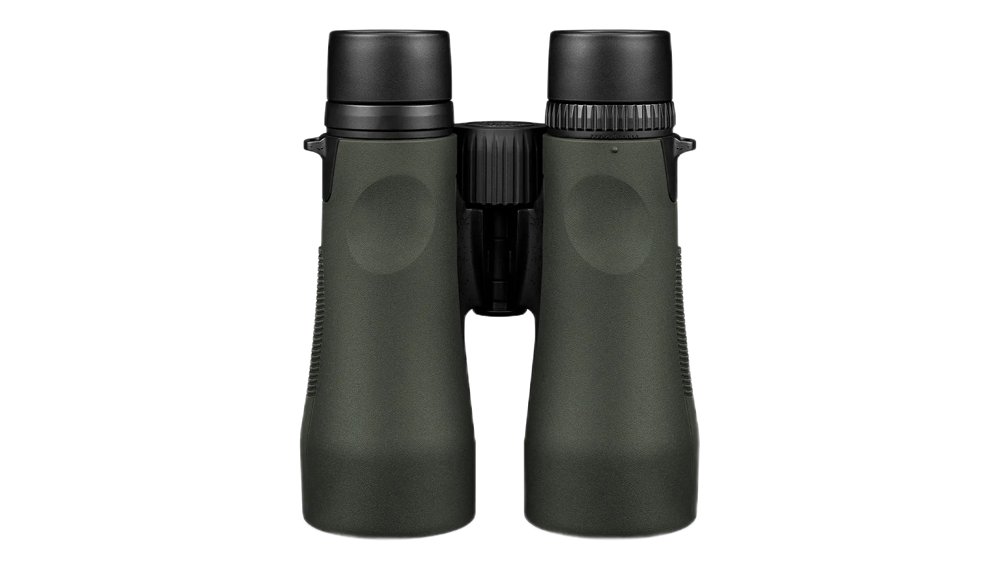
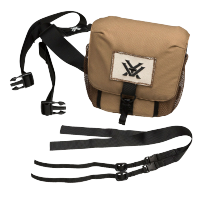
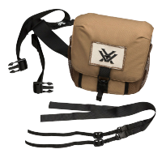

Бинокль Vortex Diamondback HD 10x50


Diamondback®️ HD значительно превосходит соотношение цены и качества, предлагая прочную оптику, оптически превосходящую ваш класс. Надежный и доступный бинокль, который по своим оптическим характеристикам входит далеко за пределы своего ценового сегмента. Корпус бинокля отличается повышенной прочностью. В комплекте сумка-разгрузчик GlassPak для быстрого развертывания оптики в полевых условиях, отличная защита и комфорт.

- Оптическая система HD – оптимизированная с помощью выбранных стеклянных элементов для обеспечения исключительного разрешения, устранение хроматической аберрации и исключительной точности передачи цвета, четкости от края к краю и пропускания света.
- Полное многослойное покрытие - Улучшает пропускание света с помощью нескольких антибликовых покрытий на всех поверхностях воздух-стекло.
- Диэлектрическое покрытие - многослойные призматические покрытия обеспечивают яркие, четкие изображения с точным цветом.
- ArmorTek® - сверхпрочное, устойчивое к царапинам покрытие защищает наружные линзы от царапин, масла и грязи.
Оптические характеристики:

- Резиновая броня - обеспечивает надежный, нескользящий захват и прочную внешнюю защиту.
- Водонепроницаемые уплотнительные кольца – препятствуют проникновению влаги, пыли и мусора в бинокль для надежной работы в любой среде.
- Ударопрочный – прочная конструкция выдерживает отдачу и удар.
- Туманостойкий - продувка аргоном предотвращает внутреннее запотевание в широком диапазоне температур.
- Призма крыши - ценится за большую прочность и более компактеный размер.
Конструктивные особенности:

- Регулируемые наглазники - Поверните вверх и вниз для комфортного просмотра в очках или без них.
- Центральное колесо фокусировки - Регулировка фокуса обоих биноклей одновременно.
- Диоптрия – регулирует разницу в глазах пользователя. Расположено на правой стороне.
- Штатив - адаптируется. Совместим с штативным адаптером, позволяет использовать его на штативе или креплении на окне автомобиля.
Особенности использования:
- GlassPak футляр для бинокля
- GlassPak корпусный ремень
- Комфортный шейный ремень
- Защитные крышки окуляров и объектива
- Салфетки для очистки линз
Комплектация:
 
